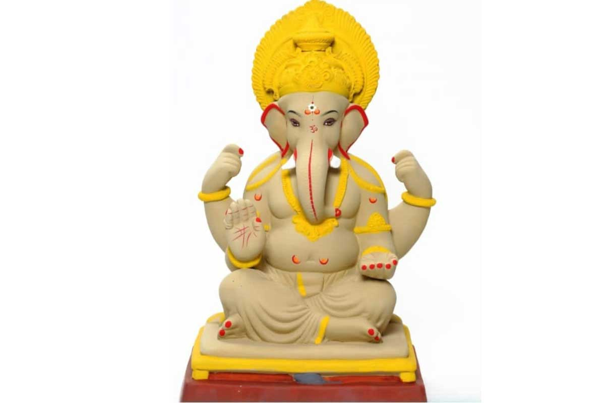

Bhumi Kala Kendra
Shadu Mati Ganpati Murtis from Pen, Raigad, Maharashtra.

Celebrating the art of Ganpati Murti making
Bhumi Kala Kendra is a Ganpati idol manufacturer situated in Pen city, Raigad district, Maharashtra, India. The business specializes in Ganesh murtis made using Shadu Mati, a traditional clay material.
Shadu Mati is valued for its natural character and its association with more environmentally conscious idol-making compared with non-biodegradable alternatives. The original website describes the murtis as handcrafted with attention to artistic detail and Maharashtra’s cultural heritage.
Pen has a long-standing association with the creation of Ganesh idols. Bhumi Kala Kendra is part of this local tradition, serving people seeking Ganpati murtis for religious ceremonies, festivals and personal devotion.
View the collection ↗What guides the work
Based on the business information provided on the original website.